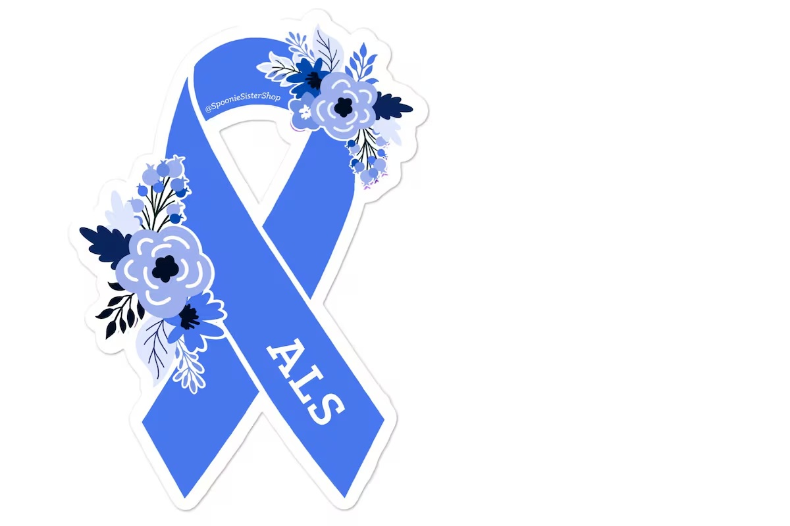

References
- ALS signal - a tool to explore clinical trials and treatments. I AM ALS - ALS is Relentless. So Are We! (2025). https://www.iamals.org/resources/als-signal-clinical-research-dashboard/
- ALS Therapy Development Institute. (2026). https://www.als.net/
- Call 1-833-788-1401 for ALS Educational Support that’s here for you. Speak to a RADICAVA JourneyMate | RADICAVA® (edaravone). (2025, December). https://letstalkals.com/
- Clinical trials for ALS | The ALS Association. (2026). https://www.als.org/research/clinical-trials-for-patients
- Dedicated to finding a cure for ALS | The ALS Association. (2026). https://www.als.org/
- Explore global ALS trials: Search with the ALS trial browser. ALS Therapy Development Institute. (2026). https://www.als.net/als-trial-navigator/browser/
- Free services for ALS patients. Your ALS Guide. (2026). https://www.youralsguide.com/resource-list.html
- Homepage: ALS Network.(2026, January 5). https://alsnetwork.org/
- Informational fact sheets | the ALS Association. (2026). https://www.als.org/navigating-als/living-with-als/informational-fact-sheets
- Making als livable until there’s A cure. The ALS Association. (2026). https://www.als.org/
- Mayo Foundation for Medical Education and Research. (2024, April 10). Amyotrophic lateral sclerosis (ALS). Mayo Clinic. https://www.mayoclinic.org/diseases-conditions/amyotrophic-lateral-sclerosis/symptoms-causes/syc-20354022?cjdata=MXxOfDB8WXww&cjevent=d7d8043afefa11f0824100990a82b839&cm_mmc=CJ-_-100357191-_-5250933-_-Evergreen%2BLink%2Bfor%2BMayo%2BClinic%2BDiet&utm_source=cj&utm_content=100357191&utm_capaign=3-months
- U.S. Department of Health and Human Services. (n.d.). Home. National Institute of Neurological Disorders and Stroke. https://www.ninds.nih.gov/
